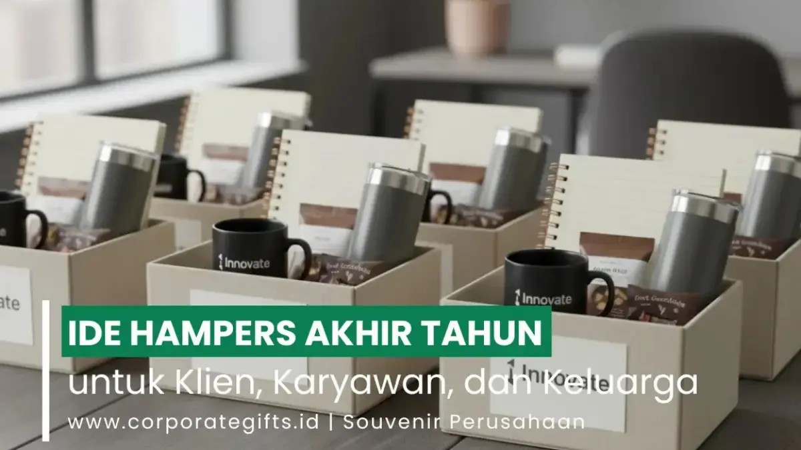

Corporate Gifts ID - Hampers akhir tahun adalah paket hadiah istimewa yang dipersembahkan perusahaan kepada klien, karyawan, dan mitra bisnis sebagai wujud apresiasi atas kolaborasi sepanjang tahun. Pemilihan isi hampers yang cermat, mulai dari kuliner artisan gourmet, produk perawatan diri (self-care), pernak-pernik dekorasi rumah, hingga cinderamata berlogo custom, mampu mempererat hubungan profesional sekaligus memperkuat citra prestisius korporasi.
Lebih dari sekadar tradisi berbagi, bingkisan akhir tahun kini berfungsi sebagai instrumen komunikasi strategis. Desain kemasan yang elegan, isi yang fungsional, serta pesan personal yang tulus mentransformasikan hampers menjadi simbol profesionalisme berkelas dan empati tulus dari manajemen.
Poin Kunci Hampers Akhir Tahun:
- Fungsi Strategis Korporat: Hampers akhir tahun berfungsi sebagai media komunikasi elegan untuk mempererat relasi bisnis dan memupuk loyalitas karyawan.
- Kategori Isi Populer: Meliputi set gourmet coffee/tea, produk self-care & aromaterapi, dekorasi etnik nusantara, serta merchandise custom berlogo.
- Waktu Distribusi Ideal: Periode terbaik pengiriman adalah akhir November hingga medio Desember sebelum jadwal libur panjang instansi.
- Kekuatan Custom Packaging: Penggunaan rigid hardbox atau keranjang anyaman rotan dengan pita satin menaikkan persepsi prestise hadiah secara signifikan.
Ide Hampers Makanan dan Minuman
Kategori kuliner selalu menjadi primadona bingkisan korporat karena sifatnya yang universal dan mudah dinikmati bersama keluarga tercinta. Selain menghadirkan kehangatan, hampers makanan dan minuman lezat menciptakan momen kebersamaan yang manis saat menyambut pergantian kalender.
1. Set Kopi atau Teh Premium
Bagi mitra kerja yang menghargai waktu relaksasi, set seduhan kopi atau teh artisan merupakan opsi sempurna. Hadirkan biji kopi single origin khas Nusantara (seperti Gayo, Toraja, atau Kintamani) atau racikan teh herbal bunga alami dalam kemasan kaleng kedap udara eksklusif. Anda juga dapat melengkapinya dengan cangkir keramik berlogo atau sendok takar kayu estetik.
2. Camilan Gourmet & Artisan Cookies
Hampers aneka kue kering handmade, cokelat praline artisan, dan kacang almond panggang selalu memikat selera. Di samping kelezatannya yang terjamin, kemasan stoples kaca bersegel pita foil emas memancarkan nuansa kemewahan. Bermitra dengan artisan kuliner lokal juga menjadi wujud nyata kepedulian CSR perusahaan terhadap UMKM berkualitas.
3. Buah-Buahan Segar & Madu Alami
Bagi perusahaan yang mengusung tema gaya hidup sehat, kombinasi buah segar musiman, sari buah dingin (cold-pressed juice), dan madu hutan murni dalam wadah anyaman kayu pinus mencerminkan kepedulian tulus terhadap kebugaran fisik penerima.

Pilihan hampers akhir tahun bertema wellness dan aromaterapi yang menenangkan pikiran setelah setahun penuh berkarya.
Ide Hampers Produk Perawatan Diri
Hampers bernuansa self-care dan kebugaran kini kian diminati instansi modern. Setelah setahun penuh mencurahkan dedikasi kerja keras, para karyawan dan rekanan bisnis tentu sangat mendambakan sarana relaksasi untuk menyegarkan kembali pikiran di rumah.
1. Set Perawatan Kulit Alami
Kurasi produk perawatan kulit berbahan dasar botanikal organik, seperti sabun mandi buatan tangan (artisan soap bar), body lotion lembut, dan mist penyegar wajah. Bubuhkan kartu ucapan bertuliskan "Terima kasih atas dedikasi luar biasa Anda di tahun ini" guna menyentuh sisi emosional penerima.
2. Lilin Aromaterapi & Reed Diffuser
Perpaduan aroma lembut seperti lavender, kayu cedar, atau citrus segar mampu mengubah atmosfer ruang keluarga menjadi oase ketenangan. Pilihlah lilin berbasis minyak kedelai (soy wax) yang aman dan ramah lingkungan.
3. Perlengkapan Spa di Rumah
Kombinasi garam mandi (bath salt) beraroma rempah, loofah alami, dan handuk katun Mesir berserat tebal menghadirkan pengalaman spa hotel berbintang langsung ke hunian penerima bingkisan.
Panduan Komparasi Kategori Hampers Akhir Tahun
Guna memudahkan tim HR dan procurement dalam menentukan paket yang selaras dengan profil penerima, tabel komparasi berikut merangkum alternatif kategori hampers unggulan:
| Kategori Hampers | Item Rekomendasi Unggulan | Karakter & Target Penerima |
|---|---|---|
| Gourmet & Artisan Food | Specialty single origin coffee, cookies artisan, teh herbal, madu murni | Universal, cocok untuk relasi keluarga, rekan kerja, dan mitra B2B |
| Wellness & Self-Care | Scented candle soy wax, reed diffuser, sabun organik, bath salt, handuk lembut | Penuh empati, sangat pas untuk apresiasi karyawan dan tim kerja |
| Heritage & Home Decor | Wastra batik nusantara, perlengkapan makan kayu jati, sukulen mini | Artistik dan unik, merepresentasikan identitas budaya korporasi |
| Executive Custom Gift | Vacuum tumbler SUS304 grafir, leather journal, gadget pintar, hardbox mewah | Prestisius, ditujukan khusus bagi klien VIP dan jajaran direksi |
Ide Hampers Dekorasi dan Kerajinan
Hampers berkonsep dekorasi hunian memberikan nilai artistik yang bertahan lama di ruang tamu penerima, menjadikannya media pengingat brand yang bernilai estetis tinggi.
1. Lilin Beraroma dengan Wadah Keramik Artistik
Wadah lilin yang terbuat dari keramik stoneware buatan perajin lokal tetap dapat dialihfungsikan sebagai pot sukulen atau wadah aksesori meja setelah lilin habis terpakai.
2. Tanaman Hias Sukulen Mini
Tanaman meja seperti sukulen atau kaktus hias melambangkan ketahanan dan harapan akan pertumbuhan bisnis yang subur di tahun yang baru.
3. Wastra Nusantara & Peralatan Makan Etnik
Kombinasi syal batik tulis, taplak tenun lurik, dan sendok garpu kayu sonokeling buatan tangan pengrajin Indonesia memancarkan keanggunan budaya yang membanggakan bagi instansi.
Ide Hampers Personal dan Custom
Bagi kemitraan bisnis berskala strategis, hampers custom eksklusif memberikan kesan penghormatan yang sangat personal dan mendalam.
1. Agenda Kerja Kulit & Pulpen Grafir Nama
Buku jurnal tahunan bersampul kulit sintetis dengan sentuhan deboss logo korporat dipadukan pulpen rollerball metalik berukir nama pejabat penerima mencerminkan kesiapan menyongsong resolusi kerja 2026.
2. Voucher Eksklusif & Pengalaman Berkesan
Melengkapi bingkisan fisik dengan voucher fine-dining, staycation di resor mewah, atau keanggotaan klub eksekutif menyuguhkan pengalaman istimewa yang tak ternilai bagi mitra VVIP.
Cara Merancang dan Menyusun Hampers Akhir Tahun
Agar paket hampers yang dipersiapkan tim internal maupun vendor tampil memukau dan rapi saat tiba di tangan penerima, ikuti empat panduan praktis berikut:
- Pilih Wadah yang Kokoh: Gunakan rigid hardbox penutup magnetik atau keranjang anyaman rotan berkualitas yang mampu menopang beban isi bingkisan secara aman selama pengiriman.
- Tentukan Tema Visual yang Selaras: Fokus pada konsep tertentu seperti "Festive Warmth", "Indonesian Heritage", atau "Executive Minimalist" agar tata letak barang terlihat menyatu.
- Perhatikan Sentuhan Finishing: Padukan kertas serut (shredded paper), kain satin alas, pita pita grosgrain, dan segel lilin (wax seal) untuk menciptakan sensasi unboxing yang dramatis.
- Susun Secara Proporsional: Posisikan item yang paling tinggi atau berat di bagian belakang, diikuti barang-barang kecil di bagian depan agar seluruh isi tampak simetris dan menggugah selera.
Pentingnya Strategi Corporate Gifting Melalui Hampers
Pengadaan hampers akhir tahun bukan sekadar pengeluaran rutin operasional, melainkan investasi strategis dalam merawat reputasi brand (brand equity). Hadiah yang disiapkan dengan penuh ketelitian mampu mengikis jarak profesional dan membangun kedekatan emosional yang kokoh antara mitra dan perusahaan Anda.
Melalui layanan kurasi terpadu di CorporateGifts.ID, setiap detail bingkisan mulai dari seleksi kurasi item, cetak logo presisi, kartu sapaan bertanda tangan direksi, hingga pengiriman logistik aman ke seluruh pelosok Indonesia siap diwujudkan tanpa kendala.
Pertanyaan Seputar Hampers Akhir Tahun (FAQ)
Kesimpulan Praktis
Mengirimkan hampers akhir tahun bukan sekadar mematuhi formalitas kalender, melainkan bentuk apresiasi bermakna yang memperkuat fondasi kerja sama jangka panjang.
Melalui paduan kemasan mewah, isi produk fungsional, dan kartu sapaan tulus, perusahaan Anda menunjukkan komitmen pada standar mutu prima di mata setiap mitra dan karyawan.
Rancang paket hampers akhir tahun institusi Anda bersama tim konsultan CorporateGifts.ID untuk memperoleh harga B2B terbaik, sampel kemasan fisik, dan layanan pengiriman tepat waktu.